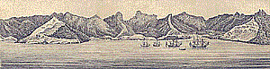
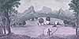

| The
Islands of Juan Fernandez |
| A description of the Island of Masa-Feuro | Views of The Juan Fernandez Islands |
The Island of Juan Fernandes lies in the latitude of 33¡:40' South, and is a hundred and ten leagues distant from the Continent of Chile It is said to have received its name from a Spaniard, who formerly procured a grant of it, and resided there some time with a view of settling it, but afterwards abandoned it. On approaching it on its east side, it appears, as represented in the annexed plate, where (a) is a small Island, called Goat Island, to the SW. of it; (b) a rock, called Monkey key, almost contiguous to it; (c) is the East bay, (d) Cumberland Bay, where we moored, and which, as will be observed, is the best road for shipping, and (e,) the East bay. The Island itself is of an irregular figure, as may be seen by the very exact plan of it here inserted ; its greatest extent being between four and five leagues, and its greatest breadth somewhat short of two leagues. The only safe anchoring at this Island is on the North side, where are the three bays mentioned above, but the middlemost known by the name of Cumberland Bay, is the widest and deepest, and in all respects much the best; the other two bays, denominated the East and West bays, are scarcely more than good landing places, where boats may conveniently put their cask on shore.
A plan of the N.E. side of the Island, containing these three bays, drawn
by a large scale, is here inserted, where it appears, that Cumberland
Bay is pretty well secured to the southward, lying only exposed from the
N. by W. to the E. by S ; and as the northerly winds seldom blow in that
climate, and never with any violence, the danger from that quarter is
not worth attending to. To distinguish this bay the better at sea, I have
added a very exact view of it, which will enable all future Navigators
readily to find it
.
The southern, or rather the S.W. part of the Island as distinguished in the plan, is widely different from the rest, being dry stony, and destitute of trees, but very flat and low, compared with the hills on the northern part. This part of the Island is never frequented by ships, being surrounded by a steep shore, and having little or no fresh water * , and besides, it is exposed to the southerly wind, which generally blows here the whole year round, and in the winter solstice very hard. The trees of which the woods on the northern side of the Island are composed, are most of them aroma-ticks, and of many different sorts : There are none of them of a size to yield any considerable timber, except the myrtle-trees, which are the largest on the Island, and supplied us with all the timber we made use of; but even these would not work to a greater length than forty feet. The top of the myrtle-tree is circular, and appears as uniform and regular, as if it had been clipped by art * it bears on its bark an excrescence like moss, which in taste and smell resembles garlick, and was used by our people instead of it. We found here too the piemento-tree and likewise the cabbage-tree, though in no great plenty.
And this may in general suffice as to the soil and vegetable productions of this place : But the face of the country, at least of the North part of the Island, is so extremely singular, that I cannot avoid giving it a particular consideration. I have already taken notice of the wild, inhospitable air with which it first appeared to us, and the gradual improvement of this uncouth landskip as we drew nearer, till we were at last captivated by the numerous beauties we discovered on the shore. And I must now add, that we found, during the time of our residence there, that the inland parts of the Island did no ways fall short of the sanguine prepossessions which we first entertained in their favour.
| For the woods which covered most of the steepest hills, were free from all bushes and underwood, and afforded an easy passage through every part of them ; and the irregularities of the hills and precipices, in the northern part of the Island, necessarily traced out by their various combinations a great number of romantic vallies ; most of which had a stream of the clearest water running through them, that tumbled in cascades from rock to rock, as the bottom of the valley, by the course of the neighbouring hills, was at any time broken into a sudden sharp descent : Some particular spots occurred in these vallies, where the shade and fragrance of the contiguous woods, the loftiness of the overhanging rocks, and the transparency and frequent falls of the neighbouring streams, presented scenes of such elegance and dignity, as would perhaps with difficulty be rivalled in any other part of the globe. It is in this place, perhaps, that the simple productions of unassisted nature may be said to excel all the fictitious descriptions of the most animated imagination. I shall finish this article with a short account of that spot where the Commodore pitched his tent, and which he made choice of for his own residence, though I despair of conveying an adequate idea of its beauty. | |
| This piece of ground which he chose was a small lawn, that lay on a little ascent, at the distance of about half a mile from the sea. In the front of his tent there was a large avenue cut through the woods to the sea-side, which sloping to the water with a gentle descent, opened a prospect of the bay and the ships at anchor. |  |
| This lawn was screened behind by a tall wood of myrtle sweeping round it, in the form of a theatre, the ground on which the wood stood, rising with a much sharper ascent than the lawn itself, though not so much, but that the hills and precipices within land towered up considerably above the tops of the trees, and added to the grandeur of the view. There were, besides, two streams of chrystal water, which ran on the right and left of the tent, within an hundred yards distance, and were shaded by the trees which skirted the lawn on either side, and compleated the symmetry of the whole. Some faint conceptions of the elegance of this situation may perhaps be better deduced from the draught of it, inserted in the adjoining plate. | |
But the great numbers of goats, which former writers described to have been found upon this Island, are at present very much diminished : For the Spaniards being informed of the advantages which the buccaneers and privateers drew from the provisions which goats-flesh here furnished them with, they have endeavoured to extirpate the breed, thereby to deprive their enemies of this relief. For this purpose, they have put on shore great numbers of large dogs, who have encreased apace, and have destroyed all the goats in the accessible part of the country ; so that there now remain only a few amongst the craggs and precipices, where the dogs cannot follow them. These are divided into separate herds of twenty or thirty each, which inhabit distinct fastnesses, and never mingle with each other : By this means we found it extremely difficult to kill them ; and yet we were so desirous of their flesh, which we all agreed much resembled venison, that we got knowledge, I believe, of all their herds, and it was conceived, by comparing their numbers together, that they scarcely exceeded two hundred upon the whole Island. I remember we had once an opportunity of observing a remarkable dispute betwixt a herd of these animals and a number of dogs ; for going in our boat into the eastern bay, we saw some dogs running very eagerly upon the foot, and being willing to discover what game they were after, we lay upon our oars some time to view them, and at last we saw them take to a hill, and looking a little further, we observed upon the ridge of it an herd of goats, which seemed drawn up for their reception; there was a very narrow path skirted on each side by precipices, on which the Master of the herd posted himself fronting the enemy, the rest of the goats being all behind him, where the ground was more open : As this spot was inaccessible by any other path, excepting where this champion had placed himself, the dogs, though they ran up-hill with great alacrity, yet when they came within about twenty yards of him, durst not encounter him, (for he would infallibly have driven them down the precipice) but gave over the chace, and quietly laid themselves down, panting at a great rate.
Goats-flesh, as I have mentioned, being scarce, we rarely being able to kill above one a day ; and our people growing tired of fish, (which, as I shall hereafter observe, abounds at this place) they at last condescended to eat seals, which by degrees they came t.o relish, and called it lamb. The seal, numbers of which haunt this Island, hath been so often described by former writers, that it is unnecessary to say any thing particular about them in this place. But there is another amphibious creature to be met with here, called a sea-lyon, that bears some resemblance to a seal, though it is much larger. This too we eat under the denomination of beef; and as it is so extraordinary an animal, I conceive, it well merits a particular annotation. They are in size, when arrived at their full growth, from twelve to twenty feet in length, and from eight to fifteen in circumference : They are extremely fat, so that after having cut thro' the skin, which is about an inch in thickness, there is at least a foot of fat before you can come at either lean or bones ; and we experienced more than once, that the fat of some of the lar-gest afforded us a butt of oil. They are likewise very full of blood, for if they are deeply wounded in a dozen places, there will instantly gush out as many fountains of blood, spouting to a considerable distance ; and to try what quantity of blood they contained, we shot one first, and then cut its throat, and measuring the blood that came from him, we found, that besides what remained in the vessels, which to be sure was considerable, we got at least two hogsheads.
Their skins are covered with short hair of a light dun colour, but their tails, and their fins, which serve them for feet on shore, are almost black ; their fins or feet are divided at the ends like fingers, the web which joins them not reaching to the extremities, and each of these extremities is furnished with a nail. They have a distant resemblance to an overgrown seal, though in some particulars there is a manifest difference, especially in the males, who have a large snout or trunk hanging down five or six inches below the end of the upper jaw ; this particular the females have not, and this renders the countenance of the male and female easy to be distinguished from each other, and besides, the males are of a much larger size. The form and appearance both of the male and female are very exactly represented in the annexed plate, only the disproportion of their size is not usually so great as is there exhibited, for the male was drawn from the life, after the largest of these animals, which was found upon the Island : He was the master of the flock, and from his driving off the other males, and keeping a great number of females to himself, he was by the seamen ludicrously stiled the Bashaw. These animals divide their time equally between the land and sea, continuing at sea all the summer, and coming on shore at the setting in of the winter, where they reside during that whole season. In this interval they engender and bring forth their young, and have generally two at a birth ; these they suckle with their milk, they being at first about the size of a full-grown seal. During the time of these animals continuance on shore, they feed on the grass and verdure which grows near the bank of the fresh-water streams ; and, when not employed in feeding, sleep in herds in the most miry places they can find out. As they seem to be of a very lethargic disposition, and not easily awakened, each herd was observed to place some of their males at a distance in the nature of sentinels, who never failed to alarm them, whenever our men attempted to molest, or even to approach them; and they were very capable of alarming, even at a considerable distance, for the noise they make is very loud and of different kinds, sometimes grunting like hogs, and other times snorting like horses in full vigour. They often, especially the males, have furious battles with each other, principally about their females; and we were one day extremely surprized by the sight of two animals, which at first appeared different from all we had ever observed, but, on a nearer approach, they proved to be two sea-lions, who had been goring each other with their teeth, and were covered over with blood : And the Bashaw before-mentioned, who generally lay surrounded with a seraglio of females, which no other male dared to approach, had not acquired that envied pre-eminence without many bloody contests, of which the marks still remained in the numerous scars which were visible in every part of his body. We killed many of them for food, particularly for their hearts and tongues, which we esteemed exceeding good eating, and preferable even to those of bullocks : And in general there was no difficulty in killing them, for they were incapable either of escaping or resisting, their motion being the most unweildy that can be conceived, their blubber, all the time they are moving, being agitated in Iarge waves under their skins. However, a sailor one day being carelessly employed in skinning a young sea-lion, the female, from whence he had taken it, came upon him unperceived, and getting his head in her mouth, she with her teeth scored his skull in notches in many places, and thereby wounded him so desperately, that though all possible care was taken of him, he died in a few days.
| Click to see other images of Masa-Feuro |
And besides the inconvenience of the anchorage, there is also a reef of rocks running off the eastern point of the Island, about two miles in length ; but there is little danger to be feared from them, I because they are always to be seen by the seas breaking over them. This place has at present one advantage beyond the Island of Juan Fernandes ; for it abounds with goats, who, not being accustomed to be disturbed, were no ways shy or apprehensive of danger, till , they had been frequently fired at. These animals reside here in great tranquillity, the Spaniards having not thought the Island considerable enough to be frequented by their enemies, and there-fore they have not been solicitous in destroying the provisions upon it ; so that no dogs have been hitherto set on shore there. And besides the goats, our people found there vast numbers of seals and sea-lions : And upon the whole, they seemed to imagine, that though it was not the most eligible place for a ship to refresh at, yet in case of necessity it might afford some sort of shelter, and prove of considerable use, especially to a single ship, who might apprehend meeting with a superior force at Fernandes. The appearance of its N.E. side, and also of its West side, may be seen in the two annexed plates. This may suffice in relation to the Island of Masa-Fuero.